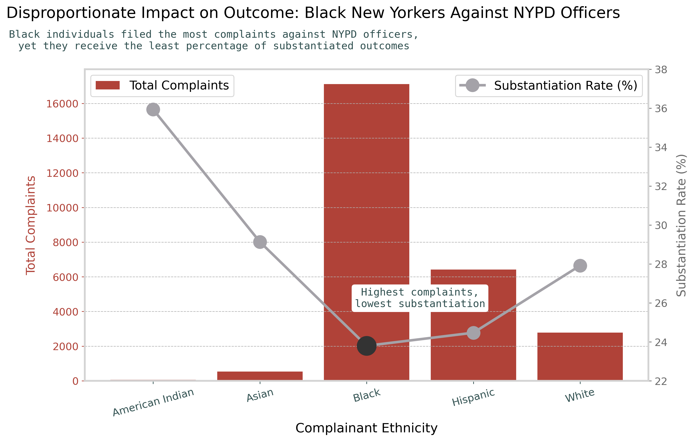
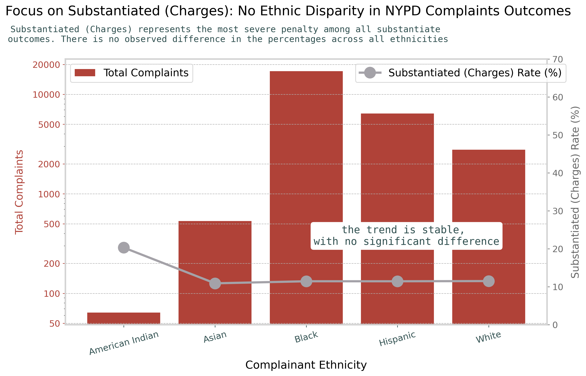

Proposition: Complaints from Black individuals against NYPD officers are less likely to result in substantiation.
FOR the Proposition

Design Decisions and Rationale:
- The use of duel axis plot, with a score of 0.5. This design aims to provide the audience with a clear contrast between the total count of complaints on the left y-axis and the substantiation rate on the right y-axis. It becomes easier to argue for the proposition when the audience sees the Black individuals filed the most number of complaints but received the lowest substantiation rate. Several alternative design choices were considered, but none could achieve the the same level of impact. For example, a scatter plot with total complaints on the x-axis and percentage on the y-axis could also convey similar message, but it would contain too little information with five points presenting five ethnicities on the plot. On the other hand, the current design choice with two axis on the left and right may risk confusing the audience and distract them with too much information.
- Calculate the percentage using all cases that result in an outcome of "Substantiate", with a score of 2. To determine the substantiation rate, it is most accurate to include all cases that are investigated to be misconduct. In the dataset, substantiated cases are categorized into different level of seriousness, with "Substantiated (Charges)" being the most severe (possibly leading to termination or suspension), and "Substantiated (No Recommendations)" being the minimal.
- A linear Scale is used on the left y-axis to represent the total count of complaints, with a score of -1. The number of complaints varies greatly across ethnicities, ranging from 60 (from American Indian people) to over 17,000 (from Black people), leading to a significant difference in bar heights. Compared to using log scale, the linear scale creates a sharper constrast with the line plot. Specifically, the bar for Black individuals would be the tallest, significantly taller than the others, while its substantiation rate appears at the lowest point of the line plot. This contrast is deceptive, choosing linear scale over log scale that would be better to visualize in large range, but it serves as a powerful evidence to argue for my proposition.
- The right y-axis is truncated (starts at 22% and ends at 38%) , with a score of -1.5. The actual difference between the highest and lowest point in substantiation rate is only about 12%, so the trend would not be visually apparent if the full percentage range were displayed. Truncating ranges allows me to exaggerate the variation between percentages, marking the substantion rate for the Black individuals to be significantly the lowest point across ethnicies, as well as serves as a subtle deceptive technique that audience might not be able to detect.
AGAINST the Proposition

Design Decisions and Rationale:
- Include only the cases that are substantiated with charges (the most severe penalty for police misconduct), with a score of -0.5. The calculation of substantiation rate involves a subset of data rather than all cases of substantiation, so that the percentages are similar across ethnicities. It is a choice leads to deception, but it would not be hard to detect with specification at the title, the subtitle, and the right y-axis.
- A wider range on the right y-axis, with a score of -1. The greatest difference in substantiation rate is 10%, and this variation is further minimized by the y-axis's wider range. As a result, the audience could hardly perceive the percentage change. However, since the variation is already small, the use of a wider range helps to make the trend less obvious but not significantly deceptive in biasing the audience against the proposition.
- The log scale on the left y-axis, with a score of -1. This design choice is being decetive from two perspecitves. First of all, it decreases the difference in height between bars, making smaller value of total complaints to be more visible while compressing the large values. In doing so, it decreases the visual contrast between the bars and the line plot compared to the previous figure where the linear scale is used. Secondly, the left y-axis is also truncated with a start point at 50. It is deceptive as being not easily noticeable to the audience.
Final Reflection
Exploring the dataset was interesting, as it was the first time getting to know any information about NYPD, and it was quite surprising to see there is an actual percentage difference in substantiation rate across ethnicities from the given data. Before plotting the graphs, I performed some cleaninging and transformation on the dataset to be used in calculation. First of all, I filtered the dataset to focus on the main five ethnicity group: American Indian, Asian, Black, Hispanic, and White. Then I grouped by the ethnicity and aggregated the columns to obtain the total number of complaints and the number of substantiated cases for each ethnicity. For the plot supporting my proposition, I included all cases that are substantiated, while for the one against it, I counted the number of cases that are substantiated with charges. Finally I calculated the percentage of the substantiation rate for the two plots. After obtaining the required information, I tried and chose the duel axis plot to present the data, and added deceptive techniques to argue for and against my proposition. Then I went through the process of examining and improving the plots, such as deciding the best colors for the bar and line plot, aligning the colors for axis and labels, writing concise title and subtitles for additional information, adjusting size and position for elements, and also adding annotations to highlight the key information.
One of the challenges I faced was to decide effective deceptive elements for the plots. The data I obtained after aggregation have already made the plots obvious to argue for and against the proposition, so I struggled to find deception techniques to exaggerate the fact while being fair in presenting information. For instance, for the second plot that argues against the proposition, at the beginning I hided the information for calculating the substantiation rate and labeled it the same as the first plot that involves in a different calculation, but it was an action of not being fair in presenting data rather than a deception technique. Based on this example, I believe that acceptable persuasive choices are those that depend on audience's cognitive skills, biasing their ways of perceiving and understanding data, while misleading ones are those that hide subset of information, including data transformation process or labels on axis. In addition, I also took a careful consideration in choosing the topic as well as naming the titles for my plots, to make it ethical and respectul especially when it comes to the discussion of ethnicities. In both the visualizations and annotations, I focused more on presenting and highlighting fact obtained from data than making inference or biasing people through wording in order to perform ethical analysis and visualization.